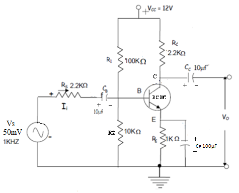

Introduction
About the Experiment
This experiment enables a student to learn
Students are able to
To perform DC analysis of a single-stage BJT amplifier.
· To do small signal analysis and find the basic properties of a BJT amplifier.
· To simulate the design in PSPICE and verify operation.
________________________________________
THEORY
1. In the circuit of Figure 1, assume the transistor has a b = 100 and VBE = 0.7V.
(a) Do DC analysis for the circuit and find its operating or Q point.
(b) Record the value of VC, VBE, VE, and IC.
(c) Calculate the necessary small signal parameters.
(d) Calculate the total DC power consumed in this circuit.
2. Replace the transistor by its small signal equivalent model, and find
(a) Overall Voltage Gain - Av
(b) Current Gain - Ai
(c) Input resistance - Ri
(d) Output Resistance- Ro
3. What is the maximum value that the signal source vs can take in order to ensure
small signal operation and that the transistor is always in active region ?
4. For a sinusoidal input signal vs of 10mV peak amplitude and 1KHz frequency draw
the total instantaneous quantities vBE(t), vC(t) and iC(t) for one cycle of the input.
Clearly mark all values, graphs and axes.
AIM:-
To perform DC analysis of a single-stage BJT amplifier. To do small signal analysis and find the basic properties of a BJT amplifier. To simulate the design in PSPICE and verify operation.
CIRCUIT
components required
| S.no | name | quantity |
|---|---|---|
| 1 | Transistor BC107 | ONE |
| 2 | Resistors (120K%u2126, 3.3K%u2126,27K%u2126, 1K%u2126) | ONE EACH |
| 3 | Resistors (2.2 K%u2126) | TWO |
| 4 | Capacitors (10µF,47µF,22µF) | ONE |
| 6 | BREAD BOARD | ONE |
PROCEDURE
1. Wire up the circuit on the bread board after testing all the components.
2. Keep the load constant. Note down the output voltage varying input from 8V to 14V in steps
of 1V. Plot the line regulation graph with along x-axis and along y-axis. Calculate
percentage line regulation using the expression (⁄)x100%.
3. 3. Keep the input voltage constant (say 10V) and note down the output voltage for various
values of load current starting from 0 to 5 mA, by varying using a rheostat. Plot the load
regulation graph with along x-axis and along y-axis.
4. To calculate percentage load regulation, mark and on y-axis on the load regulation
graph. is the output voltage in the absence of load resistor and is the output voltage
corresponding to rated ( here, 5 mA). Calculate the percentage load regulation as per
the equation,
Vr=((Vnl-Vfl)/Vnl)*100
 Calculations from the graph
Calculations from the graph
Bandwidth = fH – fL (in Hz)
Observation Tables:
Vs=50 mv
| Frequency | Vo(Volts) | Gain = Vo/Vs | Gain(dB) = 20 log(Vo/Vs) |
|---|---|---|---|
Results
| parameter | hand analysis | pspice | error% |
|---|---|---|---|
simulator
Tutorial link for experiment:
refer this vedio for simulation
Simulator
name:MULTISIM
installation detailsclick here
take quiz
attempt quizreferences
1.The Art of Electronics
Textbook by Paul Horowitz and Winfield Hill
2. Electronic Devices and Circuits
Book by Franz J. Monssen, Louis Nashelsky, and Robert Boylestad
3.youtube lecture: click here